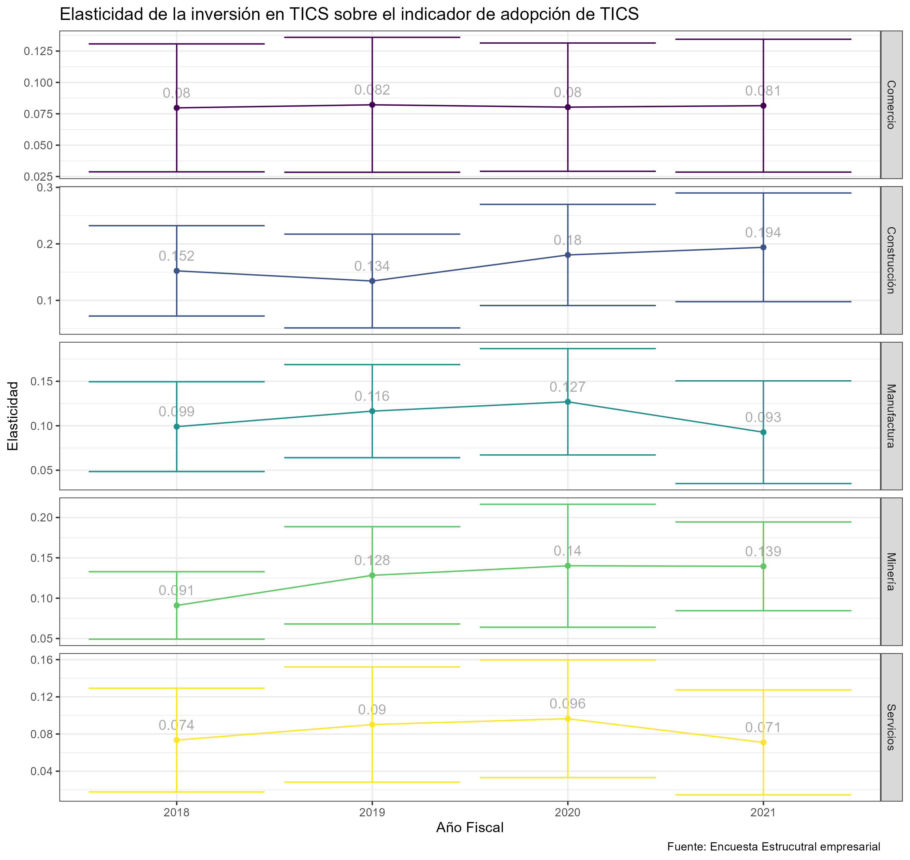

Indice de adopción de Tecnologías de la Información y Comunicación (TICS)
Contexto
Las Tecnologías de la Información y Comunicación (TICs) comprenden todo tipo de software y hardware utilizado para crear, manipular, y comunicar información en sus diversas formas. Es bien conocido, sobre todo a partir de la pandemia de COVID-19, que estas desempeñan un papel importante en la consecución del desarrollo económico y social en las economías: facilitan la generación de innovaciones, mejoran la calidad y eficiencia en la toma de decisiones, incrementan la demanda para las empresas y reducen sus costos, y a su vez impulsan diversas formas de empleo. La presente investigación aporta en el estudio de esta temática, mediante la generación de un “Índice de adopción de TICs” para el caso de Ecuador, que constituye una medición del nivel de adopción de TICs desde la perspectiva de las empresas.
Se utilizó la información de “Uso de TICs” de la Encuesta Nacional Empresarial (ENESEM), para los años entre 2018 y 2021; la población analizada se conforma por empresas medianas y grandes de los sectores comercio, construcción, manufactura, minería y servicios. La determinación del índice se realiza mediante la metodología de Análisis Factorial Múltiple (realizada en 2 etapas, considerando distintas dimensiones de evaluación de adopción de TICs), y ésta se aplica de manera que es posible evaluar la evolución intertemporal del índice.
Las 4 grandes dimensiones consideradas en la primera etapa son: i) inversión en formas de TICs, ii) cultura respecto del uso de TICs, iii) prácticas de gestión en torno a TICs, y iv) calidad de TICs implementadas. Los resultados muestran una caracterización detallada del nivel de adopción de TICs en el país, tanto antes como después de la pandemia de COVID-19. Durante todos los años analizados, se evidencian mayores valores promedio del índice en el sector Servicios, seguido por Comercio, Manufactura, Minería y Construcción; adicionalmente, las provincias con mayores niveles del índice han variado ligeramente entre 2018 y 2021, ubicando entre estas a Guayas, Pichincha, Tungurahua, Imbabura, Galápagos, Napo y Zamora Chinchipe.
Se observa, además, que la pandemia de COVID-19 trajo mejoras importantes pero heterogéneas en cuanto a adopción de TICs: entre 2019 y 2021, mientras que en Servicios y Comercio el índice incrementó en 34% y 29%, respectivamente, en Manufactura, Construcción y Minería incrementó en 22%, 8%, y 16% respectivamente. Finalmente, se observa una correlación positiva entre los niveles de adopción de TICs de las empresas y sus niveles de ventas en cada período.
Objetivo del Índice:
Evaluar y comparar la adopción y uso de tecnologías de información y comunicación entre empresas medianas y grandes en Ecuador, considerando las dinámicas pre y post pandemia de COVID-19.
Universo de Estudio:
Empresas medianas y grandes clasificadas según el Código Internacional Industrial Uniforme (CIIU) Revisión 4, excluyendo sectores de agricultura, sector público y actividades extraterritoriales.
Periodo de Estudio:
Datos anuales desde 2018 hasta 2021. El año 2022 representa un desafio para la construcción del indice con esta fuente de información debido a cambios en el año de referencia para el calculo del tamaño de empresa y por ende en el calculo de los factores de expansión lo cual dificulta la comparabilidad entre este año y los anteriores.
Fuente de Datos:
Módulo TICS Encuesta Nacional Estructural Empresarial (ENESEM) realizada por el Instituto Nacional de Estadística y Censos (INEC).
Variables Clave:
Para construir un indicador de Adopción de TICS en base a la metodología de factores multiples se consideraron los siguientes grupos de variables:
- Inversión en TIC’s: Gastos en tecnologías de la información y comunicación.
- Uso de TIC’s en compras y ventas: Aplicación de TIC’s en operaciones comerciales.
- Cultura sobre el uso de TIC’s: Valores y prácticas relacionadas con el uso de TIC’s.
- Calidad del uso de TIC’s: Efectividad y eficiencia del uso de TIC’s.
- Prácticas de gestión en torno a TIC’s: Estrategias y políticas para la gestión de TIC’s.
A continuación se muestra la cantidad y tipo de variable de las variables que componen cada uno de estos 5 grupos:
| Tipo de variable | Número de variables |
|---|---|
| Inversión en formas de TIC's | |
| Numérica | 5 |
| Uso de TIC's en compras y ventas | |
| Numérica | 8 |
| Cultura sobre el uso de TIC's | |
| Categórica | 4 |
| Cultura sobre el uso de TICS | |
| Numérica | 6 |
| Calidad de uso de TIC's | |
| Categórica | 49 |
| Numérica | 6 |
| Prácticas de gestión en torno a TIC's | |
| Categórica | 10 |
Metodología de Análisis:
Análisis Factorial Múltiple (AFM): Combinación de Análisis de Componentes Principales (ACP) para datos métricos y Análisis de Correspondencias Múltiples (ACM) para datos categóricos.
Codificación de Variables: Conversión de variables categóricas en formatos binarios.
Normalización: Estandarización de variables cuantitativas para igualar la escala y el impacto.
Construcción del Índice: Ponderación de componentes basada en la varianza explicada y relevancia estratégica.
Normalización del Índice: Escalado del índice final a una escala de 0 a 1, donde 0 representa la mínima adopción y 1 la máxima adopción observada en la muestra.
Procedimientos Estadísticos:
- Selección de Factores: Retención de factores que expliquen al menos el 75% de la variabilidad total.
- Ponderación de Factores: Utilización de la inercia explicada por cada tabla en el AFM para asignar pesos a los factores.
- Integración de Factores: Agregación de vectores propios normalizados para formar el índice compuesto.
Construcción del índice
Para la construcción seguimos los siguientes pasos: 1. Empleamos el Análisis de Factores Múltiples (MFA) con los datos de las empresas en el periodo 2018-2021 2. El indicador sigue la siguiente formula
\[Índice_{s} = \sum_{g = 1}^{5}\sum_{k_s = 1}^{K_s} \gamma_{gk_s}\times Dim_{gk_s}\] Donde:
- \(s\) indica el sector de actividad.
- \(K_s\) indica el número de dimensiones derivadas del MFA que capturan el 75% de la varianza en cada sector \(s\)
- \(g\) son los grupos de variables definidos para el MFA
- \(Dim_{gk_s}\) La proyección \(k_s\) para el grupo \(g\)
- \(\gamma_{gk_s}\) El valor propio asociado a la proyección \(k_s\)
Llevamos el indicador a escala (0,1) con la siguiente formula:
\[ z_{is} = \frac{I_{is} - min(I_{s})}{max(I_{s}) - min(I_{s})} \] Donde:
- \(I_{is}\) indica el valor del indicador para la empresa \(i\) del sector de actividad \(s\)
- \(z_{is}\) indica el valor normalizado de este indicador
- Esta fórmula no altera la distribución del indicador
- El valor de 0 indica un mínimo de adopción TIC’s mientras que el valor de 1 el nivel máximo de adopción de TIC’s (en la muestra)
Validación del Índice:
Implementación de técnicas de validación cruzada y análisis de sensibilidad para asegurar la estabilidad y reproducibilidad del índice. Las elasticidades presentadas provienen de regresiones log-log, un tipo específico de regresión lineal donde tanto la variable dependiente como la independiente se transforman mediante logaritmos. Este enfoque permite interpretar los coeficientes resultantes como elasticidades, es decir, como la proporción del cambio en la variable dependiente ante un cambio porcentual en la variable independiente.
Explicación de las Regresiones Log-Log
1. Transformación de Variables
En una regresión log-log, transformamos las variables de la siguiente manera:
\[ \log(Y) = \beta_0 + \beta_1 \log(X) + \epsilon \]
Donde: - $ Y $ es la variable de interés (por ejemplo, productividad, ventas, etc.). - $ X $ es el indicador de adopción de TICs (tecnologías de la información y la comunicación). - $ _0 $ es el intercepto de la regresión. - $ _1 $ es el coeficiente de la regresión, que representa la elasticidad. - $ $ es el término de error.
Validación en contraste con la inversión en TICS

Validación en contraste con el personal ocupado especialista en TICS
Validación en contraste con la cantidad de dispositivos ocupados para actividades digitales


Relación con las tecnologiás open source
Limitaciones:
- Exclusión de sectores económicos no cubiertos por la ENESEM.
- Potenciales sesgos en la respuesta y en la cobertura de la encuesta.
- Limitaciones inherentes a los datos auto-reportados por las empresas.
Aplicaciones del Índice:
- Evaluación de políticas relacionadas con la digitalización empresarial.
- Identificación de sectores líderes y rezagados en la adopción de TIC’s.
- Análisis de tendencias pre y post COVID-19 en la digitalización.